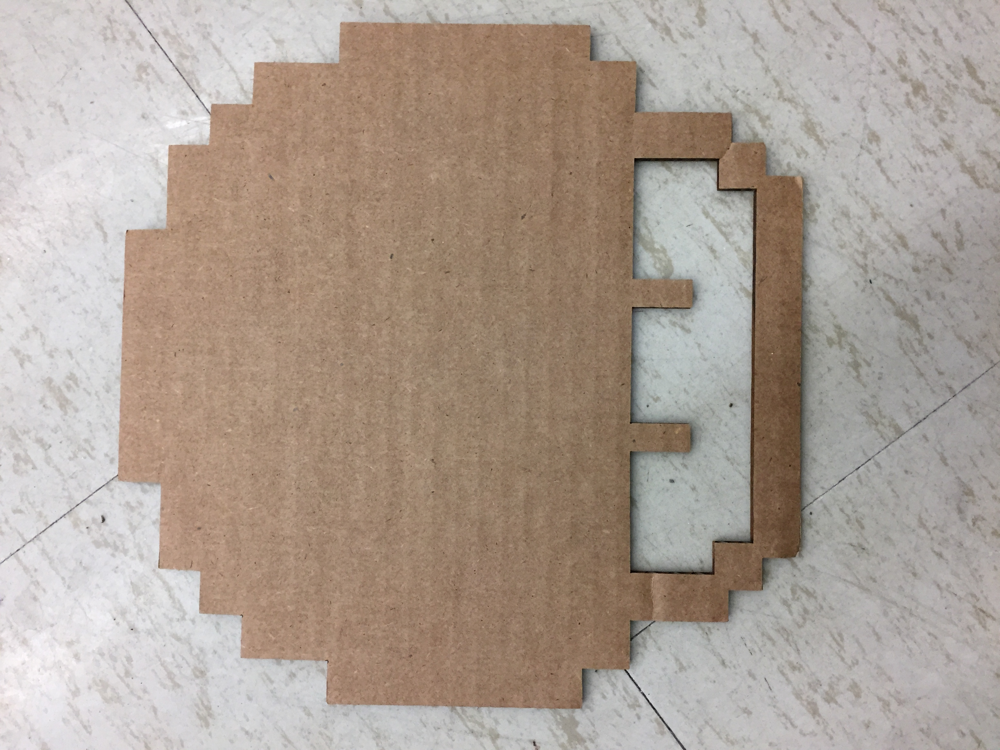

Learning how to use the vinyl cutter and laser cutter was second on the list of projects for the class. The program we used was CorelDraw but I don't have any example photos as the CDR file format doesn't work with any other kind of program. 2-D design was likely the easiest as the concept was simple although all I managed to get done because of sceduling issues is this basic mushroom,
As well as this customized hallpass to use when I leave class,